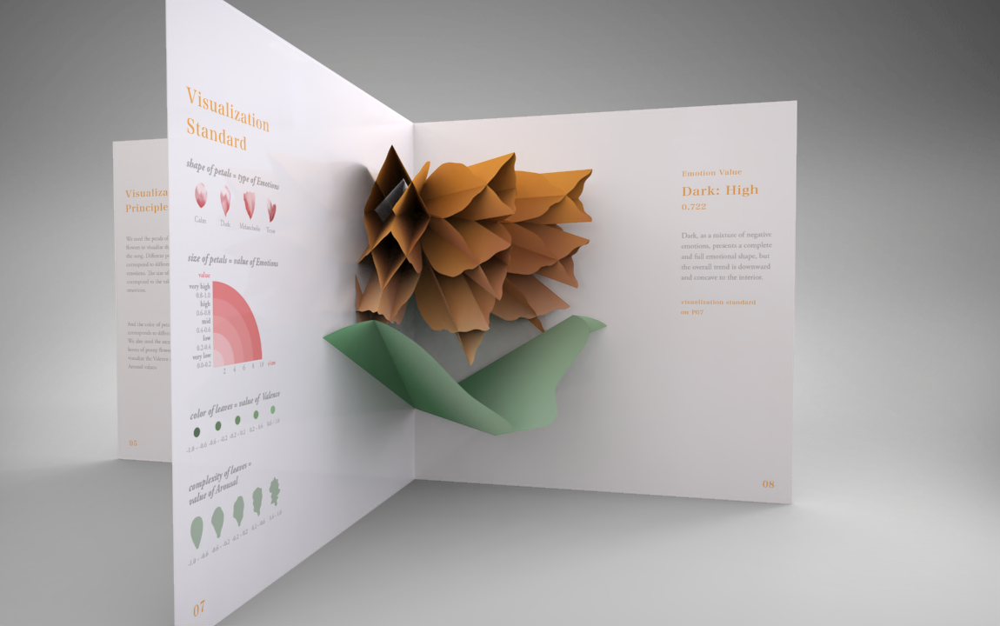
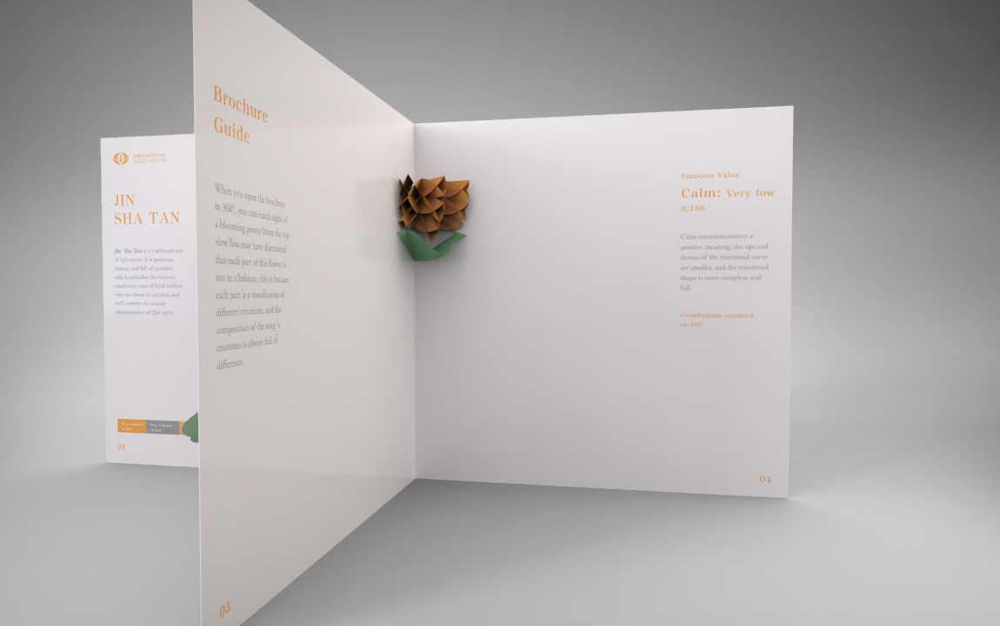
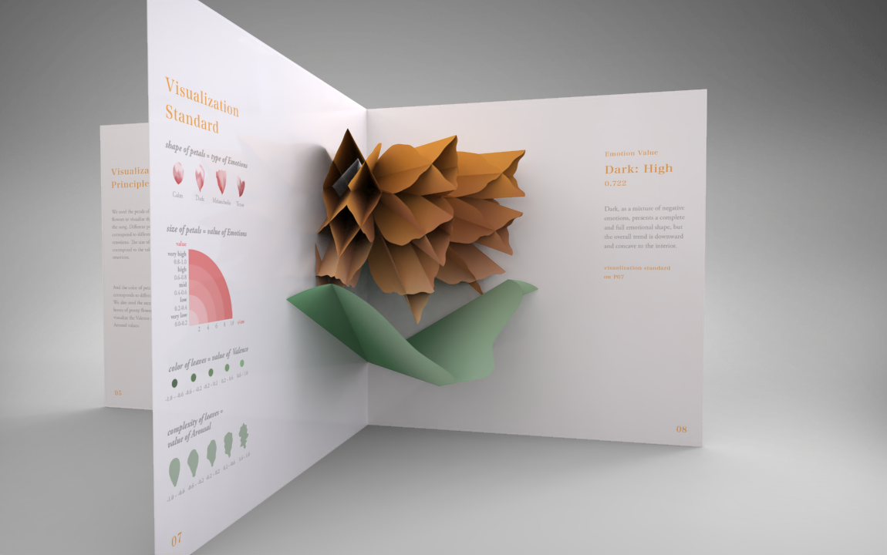
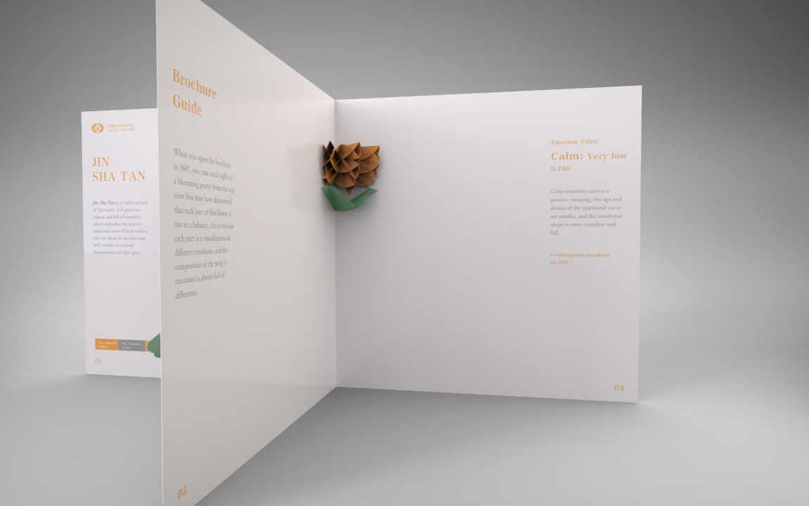

Tense: high
According to the spectral moment center equation, we can decompose the image or sound into different spectrum concepts. The frequency of the curve shaped spectrum is lower than that of the peak shaped spectrum, and the nervous mood shape presents the inverted V-shape, which expresses an inward tense mood, with a sharper and sharper contour.
Dark: high
Dark, as a mixture of negative emotions, presents a complete and full emotional shape, but the overall trend is downward and concave to the interior.
Calm: very low
Calm emotions convey a positive meaning, the ups and downs of the emotional curve are smaller, and the emotional shape is more complete and full.
Melancholic: low
To a certain extent, melancholic mood has the dual meaning of negative and vigilance, and its shape is similar to the inverted triangle with sharp edge to show the fusion of negative emotions.
 



Loading song...